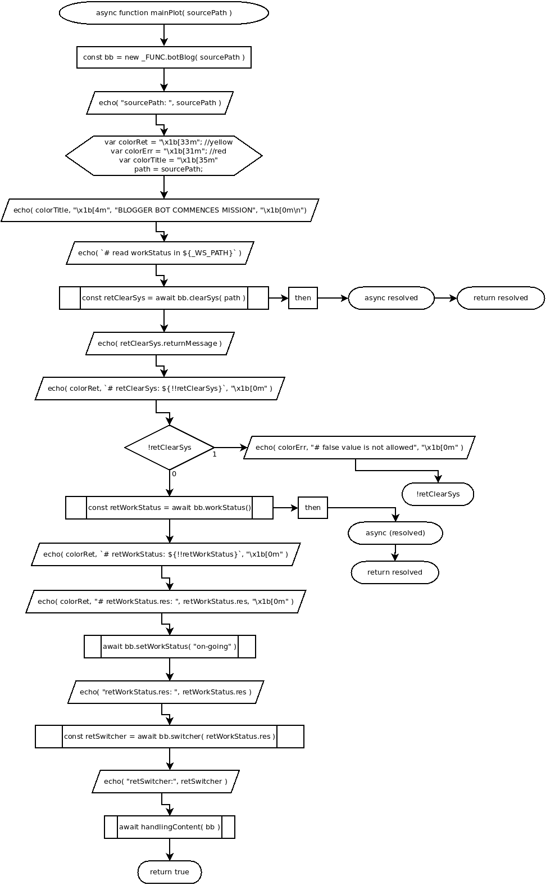

async function mainPlot( sourcePath )
Flowchart

Code
async function mainPlot( sourcePath ){
const bb = new _FUNC.botBlog( sourcePath );
echo( "sourcePath: ", sourcePath );
var colorRet = "\x1b[33m"; //yellow
var colorErr = "\x1b[31m"; //red
var colorTitle = "\x1b[35m"
path = sourcePath;
echo( colorTitle, "\x1b[4m", "BLOGGER BOT COMMENCES MISSION", "\x1b[0m\n");
echo( `# read workStatus in ${_WS_PATH}` );
const retClearSys = await bb.clearSys( path ).then( async resolved => { return resolved } );
echo( retClearSys.returnMessage );
echo( colorRet, `# retClearSys: ${!!retClearSys}`, "\x1b[0m" );
if( !retClearSys ){
echo( colorErr, "# false value is not allowed", "\x1b[0m" );
return !retClearSys;
}
const retWorkStatus = await bb.workStatus().then( async (resolved)=>{ return resolved; } );
echo( colorRet, `# retWorkStatus: ${!!retWorkStatus}`, "\x1b[0m" );
echo( colorRet, "# retWorkStatus.res: ", retWorkStatus.res, "\x1b[0m" );
await bb.setWorkStatus( "on-going" );
echo( "retWorkStatus.res: ", retWorkStatus.res );
const retSwitcher = await bb.switcher( retWorkStatus.res );
echo( "retSwitcher:", retSwitcher );
await handlingContent( bb );
return true;
}
Refers to:
-
async clearSys( path )
-
async setWorkStatus( status )
-
async workStatus()
-
async switcher( data )
-
async function handlingContent()